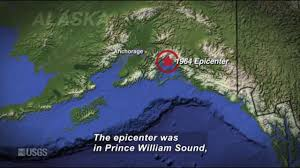
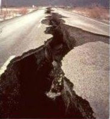

Southern Alaska is in a large the Ring of Fire, also known as the Circum-Pacific Belt, whrere ≈90% of the world's earthqaukes occur. Kodiak Island is in central Akaska, and is located on the North American Plate near the boundary between the North American and Pacific plates. Here, the Pacific Plate is slowly slipping underneath the North American Plate, creating a high point of stress. After tracking the after-shocks after the earthquake, scientists figured out that the strain released from the earthquake was most intense off Kodiak , Montague, and Hinchinbrook Islands.
The 1964 Alaska earthquake, also known as the Great Alaska earthquake and the Good Friday earthquake, lasted 4 minutes and 38 seconds across south-central Alaska, and was a 9.2-9.3 magnitude earthquake that occurred at 5:36pm AKST (Alaska standard time) on Good Friday, March 27, 1964. The earthquake became the most powerful one recorded in North America and the second most powerful earthquake in the world that resulted in ground fissures, collapsed buildings, and tsunamis ending with a total of 139 deaths
Two types of tsunami were produced by this subduction zone earthquake, including a tectonic tsunami and another 20 smaller and local ones. The smaller tsunamis were made by submarine and subaerial landslides and were responsible for most of the property damage dealt. These tsunami waves made it to over 20 countries, including Peru, New Zealand, Papua New Guinea, Japan, Mexico, and Antarctica. 124 out of 139 deaths came from the tsunamis in Alaska, Oregon, and California. Only 5 people died in Oregon and 15 people died in California, but property damage was estimated to be about $160 million, which was around $894 million in 2024.
